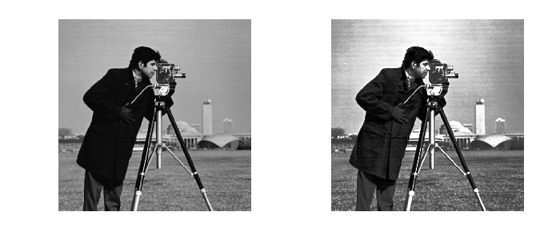

| author: | Emmanuelle Gouillart |
|---|
scikit-image is a Python package dedicated to image processing, and using natively NumPy arrays as image objects. This chapter describes how to use scikit-image on various image processing tasks, and insists on the link with other scientific Python modules such as NumPy and SciPy.
See also
For basic image manipulation, such as image cropping or simple filtering, a large number of simple operations can be realized with NumPy and SciPy only. See Image manipulation and processing using Numpy and Scipy.
Chapters contents
Image = np.ndarray
| image: | np.ndarray |
|---|---|
| pixels: | array values: a[2, 3] |
| channels: | array dimensions |
| image encoding: | dtype (np.uint8, np.uint16, np.float) |
| filters: | functions (numpy, skimage, scipy) |
>>> check = np.zeros((9, 9))
>>> check[::2, 1::2] = 1
>>> check[1::2, ::2] = 1
>>> import matplotlib.pyplot as plt
>>> plt.imshow(check, cmap='gray', interpolation='nearest')
Stable release : 0.8 (included in Canopy and Anaconda)
0.7 release packaged in Ubuntu
>>> import skimage
>>> from skimage import data, filter # most functions are in subpackages
Most scikit-image functions take NumPy ndarrays as arguments
>>> camera = data.camera()
>>> camera.dtype
dtype('uint8')
>>> filtered_camera = filter.median_filter(camera)
>>> type(filtered_camera)
<type 'numpy.ndarray'>
Other Python packages are available for image processing and work with NumPy arrays:
- :mod:scipy.ndimage: for nd-arrays (no image magics). Basic filtering, mathematical morphology, regions properties
- Mahotas
Also, powerful image processing libraries have Python bindings:
(but they are less Pythonic and NumPy friendly).
Warning
The Image wrapper class around np.ndarray
skimage is meant to work “natively” with NumPy arrays, and most skimage functions return NumPy arrays. Some functions of the data submodule return instead an instance of the Image class, which is just a wrapper class around NumPy ndarray.
>>> camera = data.camera()
>>> camera
Image([[156, 157, 160, ..., 152, 152, 152],
[156, 157, 159, ..., 152, 152, 152],
[158, 157, 156, ..., 152, 152, 152],
...,
[121, 123, 126, ..., 121, 113, 111],
[121, 123, 126, ..., 121, 113, 111],
[121, 123, 126, ..., 121, 113, 111]], dtype=uint8)
>>> isinstance(camera, np.ndarray)
True
You should just consider that an Image instance is a regular ndarray.
Different kinds of functions, from boilerplate utility functions to high-level recent algorithms.
Filters: functions transforming images into other images.
- NumPy machinery
- Common filtering algorithms
Data reduction functions: computation of image histogram, position of local maxima, of corners, etc.
Other actions: I/O, visualization, etc.
I/O: skimage.io
>>> from skimage import io
Reading from files: skimage.io.imread()
>>> filename = os.path.join(skimage.data_dir, 'camera.png')
>>> camera = io.imread(filename)
Works with all data formats supported by the Python Imaging Library (or any other I/O plugin provided to imread with the plugin keyword argument).
Also works with URL image paths:
>>> logo = io.imread('http://scikit-image.org/_static/img/logo.png')
Saving to files:
>>> io.imsave('local_logo.png', logo)
(imsave also uses an external plugin such as PIL)
I/O also available for videos if external backends such as GStreamer or OpenCV are present
>>> movie = io.video.Video('video_file.avi')
>>> image_array = movie.get_index_frame(10)
Image ndarrays can be represented either by integers (signed or unsigned) or floats.
Careful with overflows with integer data types
>>> camera = data.camera()
>>> camera.dtype
dtype('uint8')
>>> camera_multiply = 3 * camera
Different integer sizes are possible: 8-, 16- or 32-bytes, signed or unsigned.
Warning
An important (if questionable) skimage convention: float images are supposed to lie in [-1, 1] (in order to have comparable contrast for all float images)
>>> camera_float = util.img_as_float(camera)
>>> camera.max(), camera_float.max()
(Image(255, dtype=uint8), 1.0)
Some image processing routines need to work with float arrays, and may hence output an array with a different type and the data range from the input array
>>> from skimage import filter
>>> camera_sobel = filter.sobel(camera)
>>> camera_sobel.max()
0.8365106670670005
Utility functions are provided in skimage.util to convert both the dtype and the data range, following skimage’s conventions: util.img_as_float, util.img_as_ubyte, etc.
See the user guide for more details.
Color images are of shape (N, M, 3) or (N, M, 4) (when an alpha channel encodes transparency)
>>> lena = data.lena()
>>> lena.shape
(512, 512, 3)
Routines converting between different colorspaces (RGB, HSV, LAB etc.) are available in skimage.color: color.rgb2hsv, color.lab2rgb, etc. Check the docstring for the expected dtype (and data range) of input images.
Note
3-D images
Some functions of skimage can take 3-D images as input arguments. Check the docstring to know if a function can be used on 3-D images (for example MRI or CT images).
Exercise
Open a color image on your disk as a NumPy array.
Find a skimage function computing the histogram of an image and plot the histogram of each color channel
Convert the image to grayscale and plot its histogram.
Goals: denoising, feature (edges) extraction, ...
Local filters replace the value of pixels by a function of the values of neighboring pixels. The function can be linear or non-linear.
Neighbourhood: square (choose size), disk, or more complicated structuring element.

Example : horizontal Sobel filter
>>> text = data.text()
>>> hsobel_text = filter.hsobel(text)
Uses the following linear kernel for computing horizontal gradients:
1 2 1
0 0 0
-1 -2 -1
Non-local filters use a large region of the image (or all the image) to transform the value of one pixel:
>>> camera = data.camera()
>>> camera_equalized = exposure.equalize_hist(camera)
>>> # Rk: use instead exposure.equalize in skimage 0.7
Enhances contrast in large almost uniform regions.
See http://en.wikipedia.org/wiki/Mathematical_morphology
Probe an image with a simple shape (a structuring element), and modify this image according to how the shape locally fits or misses the image.
Default structuring element: 4-connectivity of a pixel
>>> from skimage import morphology
>>> morphology.diamond(1)
array([[0, 1, 0],
[1, 1, 1],
[0, 1, 0]], dtype=uint8)

Erosion = minimum filter. Replace the value of a pixel by the minimal value covered by the structuring element.:
>>> a = np.zeros((7,7), dtype=np.int)
>>> a[1:6, 2:5] = 1
>>> a
array([[0, 0, 0, 0, 0, 0, 0],
[0, 0, 1, 1, 1, 0, 0],
[0, 0, 1, 1, 1, 0, 0],
[0, 0, 1, 1, 1, 0, 0],
[0, 0, 1, 1, 1, 0, 0],
[0, 0, 1, 1, 1, 0, 0],
[0, 0, 0, 0, 0, 0, 0]])
>>> morphology.binary_erosion(a, morphology.diamond(1)).astype(np.uint8)
array([[0, 0, 0, 0, 0, 0, 0],
[0, 0, 0, 0, 0, 0, 0],
[0, 0, 0, 1, 0, 0, 0],
[0, 0, 0, 1, 0, 0, 0],
[0, 0, 0, 1, 0, 0, 0],
[0, 0, 0, 0, 0, 0, 0],
[0, 0, 0, 0, 0, 0, 0]], dtype=uint8)
>>> #Erosion removes objects smaller than the structure
>>> morphology.binary_erosion(a, morphology.diamond(2)).astype(np.uint8)
array([[0, 0, 0, 0, 0, 0, 0],
[0, 0, 0, 0, 0, 0, 0],
[0, 0, 0, 0, 0, 0, 0],
[0, 0, 0, 0, 0, 0, 0],
[0, 0, 0, 0, 0, 0, 0],
[0, 0, 0, 0, 0, 0, 0],
[0, 0, 0, 0, 0, 0, 0]], dtype=uint8)
Dilation: maximum filter:
>>> a = np.zeros((5, 5))
>>> a[2, 2] = 1
>>> a
array([[ 0., 0., 0., 0., 0.],
[ 0., 0., 0., 0., 0.],
[ 0., 0., 1., 0., 0.],
[ 0., 0., 0., 0., 0.],
[ 0., 0., 0., 0., 0.]])
>>> morphology.binary_dilation(a, morphology.diamond(1)).astype(np.uint8)
array([[0, 0, 0, 0, 0],
[0, 0, 1, 0, 0],
[0, 1, 1, 1, 0],
[0, 0, 1, 0, 0],
[0, 0, 0, 0, 0]], dtype=uint8)
Opening: erosion + dilation:
>>> a = np.zeros((5,5), dtype=np.int)
>>> a[1:4, 1:4] = 1; a[4, 4] = 1
>>> a
array([[0, 0, 0, 0, 0],
[0, 1, 1, 1, 0],
[0, 1, 1, 1, 0],
[0, 1, 1, 1, 0],
[0, 0, 0, 0, 1]])
>>> morphology.binary_opening(a, morphology.diamond(1)).astype(np.uint8)
array([[0, 0, 0, 0, 0],
[0, 0, 1, 0, 0],
[0, 1, 1, 1, 0],
[0, 0, 1, 0, 0],
[0, 0, 0, 0, 0]], dtype=uint8)
Opening removes small objects and smoothes corners.
Grayscale mathematical morphology
Mathematical morphology operations are also available for (non-binary) grayscale images (int or float type). Erosion and dilation correspond to minimum (resp. maximum) filters.
Higher-level mathematical morphology are available: tophat, skeletonization, etc.
Example of filters comparison: image denoising
>>> from skimage import filter
>>> coins = data.coins()
>>> coins_zoom = coins[10:80, 300:370]
>>> median_coins = filter.median_filter(coins_zoom)
>>> tv_coins = filter.tv_denoise(coins_zoom, weight=0.1)
>>> from scipy import ndimage
>>> gaussian_coins = ndimage.gaussian_filter(coins, sigma=2)
Segmentation = filter that maps an image onto an image of labels corresponding to different regions.
Binary segmentation: foreground + background
Histogram-based method: Otsu thresholding
from skimage import data
from skimage import filter
camera = data.camera()
val = filter.threshold_otsu(camera)
mask = camera < val
Synthetic data:
>>> n = 20
>>> l = 256
>>> im = np.zeros((l, l))
>>> points = l*np.random.random((2, n**2))
>>> im[(points[0]).astype(np.int), (points[1]).astype(np.int)] = 1
>>> im = ndimage.gaussian_filter(im, sigma=l/(4.*n))
>>> blobs = im > im.mean()
Label all connected components:
>>> all_labels = morphology.label(blobs)
Label only foreground connected components:
>>> blobs_labels = morphology.label(blobs, background=0)
Watershed segmentation
>>> from skimage.morphology import watershed, is_local_maximum
>>>
>>> # Generate an initial image with two overlapping circles
>>> x, y = np.indices((80, 80))
>>> x1, y1, x2, y2 = 28, 28, 44, 52
>>> r1, r2 = 16, 20
>>> mask_circle1 = (x - x1)**2 + (y - y1)**2 < r1**2
>>> mask_circle2 = (x - x2)**2 + (y - y2)**2 < r2**2
>>> image = np.logical_or(mask_circle1, mask_circle2)
>>> # Now we want to separate the two objects in image
>>> # Generate the markers as local maxima of the distance
>>> # to the background
>>> from scipy import ndimage
>>> distance = ndimage.distance_transform_edt(image)
>>> local_maxi = is_local_maximum(distance, image, np.ones((3, 3)))
>>> markers = morphology.label(local_maxi)
>>> labels_ws = watershed(-distance, markers, mask=image)
Random walker segmentation
>>> # Transform markers image so that 0-valued pixels are to
>>> # be labelled, and -1-valued pixels represent background
>>> markers[~image] = -1
>>> labels_rw = segmentation.random_walker(image, markers)
Postprocessing label images
skimage provides several utility functions that can be used on label images (ie images where different discrete values identify different regions). Functions names are often self-explaining: segmentation.clear_border, segmentation.relabel_from_one, morphology.remove_small_objects, etc.
Exercise
>>> from skimage import measure
>>> measure.regionprops?
Example: compute the size and perimeter of the two segmented regions:
>>> measure.regionprops(labels_rw, properties=['Area', 'Perimeter'])
[{'Perimeter': 117.25483399593905, 'Area': 770.0, 'Label': 1},
{'Perimeter': 149.1543289325507, 'Area': 1168.0, 'Label': 2}]
See also
for some properties, functions are available as well in scipy.ndimage.measurements with a different API (a list is returned).
Exercise (cont’d)
- Use the binary image of the coins and background from the previous exercise.
- Compute an image of labels for the different coins.
- Compute the size and eccentricity of all coins.
Meaningful visualizations are useful when testing a given processing pipeline.
Some image processing operations:
>>> coins = data.coins()
>>> mask = coins > filter.threshold_otsu(coins)
>>> clean_border = segmentation.clear_border(mask)
Visualize binary result:
>>> plt.figure()
>>> plt.imshow(clean_border, cmap='gray')
Visualize contour
>>> plt.figure()
>>> plt.imshow(coins, cmap='gray')
>>> plt.contour(clean_border, [0.5])
Use skimage dedicated utility function:
>>> # In >= 0.8
>>> coins_edges = segmentation.mark_boundaries(coins, clean_border)
>>> # In 0.7
>>> # segmentation.visualize_boundaries(color.gray2rgb(coins), clean_border)
>>> plt.imshow(coins_edges)
The (experimental) scikit-image viewer
skimage.viewer = matplotlib-based canvas for displaying images + experimental Qt-based GUI-toolkit
>>> from skimage import viewer
>>> new_viewer = viewer.ImageViewer(coins)
>>> new_viewer.show()
Useful for displaying pixel values.
For more interaction, plugins can be added to the viewer:
>>> new_viewer = viewer.ImageViewer(coins)
>>> from skimage.viewer.plugins import lineprofile
>>> new_viewer += lineprofile.LineProfile()
>>> new_viewer.show()

Geometric or textural descriptor can be extracted from images in order to
>>> from skimage import feature
Example: detecting corners using Harris detector
from skimage.feature import corner_harris, corner_subpix, corner_peaks
from skimage.transform import warp, AffineTransform
tform = AffineTransform(scale=(1.3, 1.1), rotation=1, shear=0.7,
translation=(210, 50))
image = warp(data.checkerboard(), tform.inverse, output_shape=(350, 350))
coords = corner_peaks(corner_harris(image), min_distance=5)
coords_subpix = corner_subpix(image, coords, window_size=13)
(this example is taken from http://scikit-image.org/docs/dev/auto_examples/plot_corner.html)
Points of interest such as corners can then be used to match objects in different images, as described in http://scikit-image.org/docs/dev/auto_examples/plot_matching.html